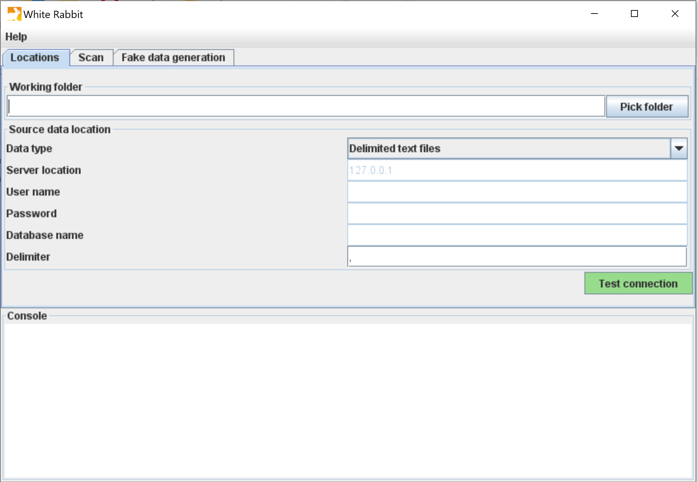
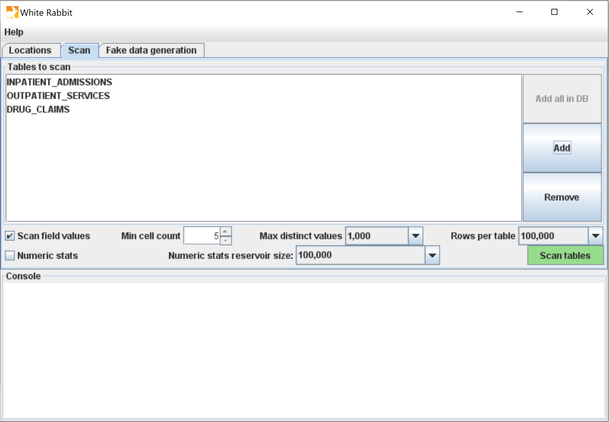
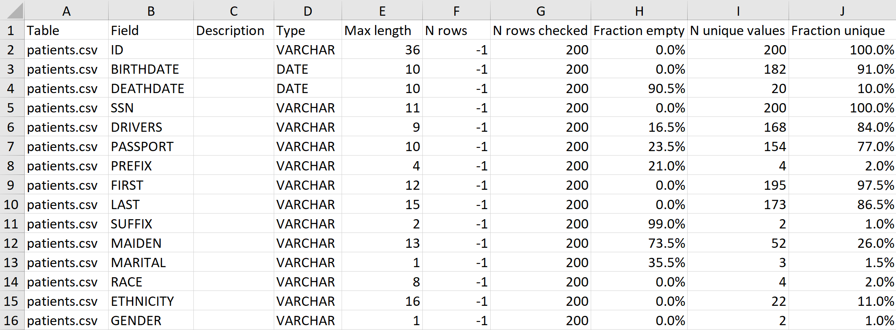
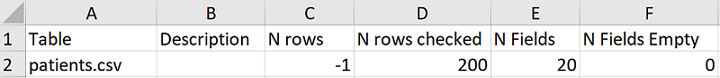
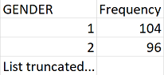
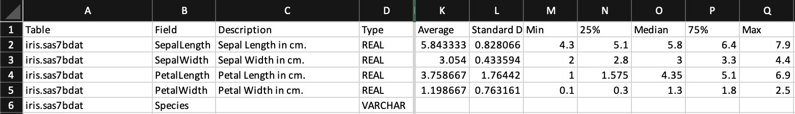

OHDSI White Rabbit
OHDSI White RabbitIntroduction
Scope and purpose
WhiteRabbit is a software tool to help prepare for ETLs (Extraction, Transformation, Loading) of longitudinal health care databases into the Observational Medical Outcomes Partnership (OMOP) Common Data Model (CDM). The source data can be in delimited text files, SAS files, or in a database (MySQL, SQL Server, Oracle, PostgreSQL, Microsoft Access, Amazon RedShift, PDW, Teradata, Google BigQuery, Azure SQL Database). Note that for support of the OHDSI analytical tooling, the OMOP CDM will need to be in one of a limited set of database platforms (SQL Server, Oracle, PostgreSQL, Amazon RedShift, Google BigQuery, Impala).
WhiteRabbit’s main function is to perform a scan of the source data, providing detailed information on the tables, fields, and values that appear in a field. This scan will generate a report that can be used as a reference when designing the ETL, for instance by using the Rabbit-In-A-Hat tool. WhiteRabbit differs from standard data profiling tools in that it attempts to prevent the display of personally identifiable information (PII) data values in the generated output data file.
Process Overview
The typical sequence for using this software to scan source data in preparation of developing an ETL into an OMOP CDM:
- Set working folder, the location on the local desktop computer where results will be exported.
- Connect to the source database or delimited text file and test connection.
- Select the tables to be scanned and execute the WhiteRabbit scan.
- WhiteRabbit creates a ‘ScanReport’ with information about the source data.
Once the scan report is created, this report can then be used in the Rabbit-In-A-Hat tool or as a stand-alone data profiling document.
Installation and support
Installation
- Download the latest version of WhiteRabbit from Github: https://github.com/OHDSI/WhiteRabbit/releases/latest.
The packaged application can be found at the bottom of the page under assets, in a file called WhiteRabbit_vX.X.X.zip (whereX.X.Xis the latest version). - Unzip the download
- Double-click on
bin/whiteRabbit.baton Windows to start WhiteRabbit, andbin/whiteRabbiton macOS and Linux.
See Running from the command line for details on how to run from the command line instead. - Go to Using the Application Functions for detailed instructions on how to make a scan of your data.
Note: on releases earlier than version 0.8.0, open the respective WhiteRabbit.jar or RabbitInAHat.jar files instead. Note: WhiteRabbit and RabbitInaHat only work from a path with only ascii characters.
Memory
WhiteRabbit possibly does not start when the memory allocated by the JVM is too big or too small. By default this is set to 1200m. To increase the memory (in this example to 2400m), either set the environment variable EXTRA_JVM_ARGUMENTS=-Xmx2400m before starting or edit in bin/WhiteRabbit.bat the line %JAVACMD% %JAVA_OPTS% -Xmx2400m.... To lower the memory, set one of these variables to e.g. -Xmx600m. If you have a 32-bit Java VM installed and problems persist, consider installing 64-bit Java.
Support
All source code, descriptions and input/output examples are available on GitHub: https://github.com/OHDSI/WhiteRabbit
Any bugs/issues/enhancements should be posted to the GitHub repository: https://github.com/OHDSI/WhiteRabbit/issues
Any questions/comments/feedback/discussion can be posted on the OHDSI Developer Forum: http://forums.ohdsi.org/c/developers
Using the application functions
Specifying the Location of Source Data

Working Folder
Any files that WhiteRabbit creates will be exported to this local folder. Use the “Pick Folder” button to navigate in your local environment where you would like the scan document to go.
Source Data
Here you can specify the location of the source data. The following source types are supported: delimited text files, SAS files, MySQL, SQL Server, Oracle, PostgreSQL, Microsoft Access, Amazon RedShift, PDW, Teradata, Google BigQuery, Azure SQL Database. Below are connection instructions for each data type of data source. Once you have entered the necessary information, the “Test connection” button can ensure a connection can be made.
Delimited text files
- Delimiter: specifies the delimiter that separates columns. Enter
tabfor a tab delimited file.
WhiteRabbit will look for the files to scan in the same folder you set up as a working directory.
SAS
- No parameters have to be provided for SAS files.
WhiteRabbit will look for .sas7bdat files to scan in the same folder you set up as a working directory.
Note that it is currently not possible to produce fake data for SAS files from a scan report.
MySQL
- Server location: the name or IP address of the server running MySQL. You can also specify the port (ex:
<host>:<port>), which defaults to 3306. - User name: name of the user used to log into the server
- Password: password for the supplied user name
- Database name: name of the database containing the tables
Oracle
- Server location: this field contains the SID, service name, and optionally the port:
<host>/<sid>,<host>:<port>/<sid>,<host>/<service name>, or<host>:<port>/<service name> - User name: name of the user used to log into the server
- Password: password for the supplied user name
- Database name: this field contains the schema (i.e. ‘user’ in Oracle terms) containing the tables
SQL Server
- Server location: the name or IP address of the server running SQL Server. You can also specify the port (ex:
<host>:<port>), which defaults to 1433. - User name: name of the user used to log into the server. Optionally, the domain can be specified as
<domain>/<user>(e.g. ‘MyDomain/Joe’) - Password: password for the supplied user name
- Database name: name of the database containing the tables
When the SQL Server JDBC drivers are installed, you can also use Windows authentication. In this case, user name and password should be empty.
- Download the .exe from http://msdn.microsoft.com/en-us/sqlserver/aa937724.aspx.
- Run it, thereby extracting its contents to a folder.
- In the extracted folder you will find the file
_sqljdbc_4.0/enu/auth/x64/sqljdbc_auth.dll_(64-bits) or_sqljdbc_4.0/enu/auth/x86/sqljdbc_auth.dll_(32-bits), which needs to be moved to a location on the system path, for example toc:/windows/system32.
PostgreSQL
- Server location: this field contains the host name and database name (
<host>/<database>). You can also specify the port (ex:<host>:<port>/<database>), which defaults to 5432. - User name: name of the user used to log into the server
- Password: password for the supplied user name
- Database name: this field contains the schema containing the tables
Google BigQuery
Google BigQuery (GBQ) supports two different connection/authentication methods: application default credentials and service account authentication. The former method is considered more secure because it writes auditing events to stackdriver. The specific method used is determined by the arguments provided to the configuration panel as described below.
Authentication via application default credentials:
When using application default credentials authentication, you must run the following gcloud command in the user account only once: gcloud auth application-default login (do not include the single quote characters). An application key is written to ~/.config/gcloud/application_default_credentails.json.
- Server location: name of the GBQ ProjectID
- User name: not used
- Password: not used
- Database name: data set name within ProjectID named in Server location field
Authentication via service account credentials:
- Server location: name of GBQ ProjectID
- User name: OAuth service account email address
- Password: OAuth private key path (full path to the private key JSON file)
- Database name: data set name within ProjectID named in Server location field
Azure SQL Database
- Server location: server address string including database name (e.g.
<project>.database.windows.net:1433;database=<database_name>) - User name: name of the user used to log into the server
- Password: password for the supplied user name
Scanning a Database
Performing the Scan

A scan generates a report containing information on the source data that can be used to help design the ETL. Using the Scan tab in WhiteRabbit you can either select individual tables in the selected source database by clicking on ‘Add’ (Ctrl + mouse click), or automatically select all tables in the database by clicking on ‘Add all in DB’.
There are a few setting options as well with the scan:
- Checking the “Scan field values” box tells WhiteRabbit that you would like to investigate raw data items within tables selected for a scan (i.e. if you select Table A, WhiteRabbit will review the contents in each column in Table A).
- “Min cell count” is an option when scanning field values. By default, this is set to 5, meaning values in the source data that appear less than 5 times will not appear in the report.
- “Rows per table” is an option when scanning field values. By default, WhiteRabbit will random 100,000 rows in the table. There are other options to review 500,000, 1 million or all rows within the table.
- “Max distinct values” is an option when scanning field values. By default, this is set to 1,000, meaning a maximum of 1,000 distinct values per field will appear in the scan report. This option can be set to 100, 1,000 or 10,000 distinct values.
- Unchecking the “Scan field values” tells WhiteRabbit to not review or report on any of the raw data items.
- Checking the “Numeric stats” box will include numeric statistics. See the section on Numerical Statistics.
Once all settings are completed, press the ‘Scan tables’ button. After the scan is completed the report will be written to the working folder.
Running from the command line
For various reasons one could prefer to run WhiteRabbit from the command line. This is possible by specifying all the options one would normally select in the user interface in an .ini file. An example ini file can be found in the iniFileExamples folder. Then, we can reference the ini file when calling WhiteRabbit from the command line:
Windows
bin/whiteRabbit.bat -ini WhiteRabbit.ini
Mac/Unix
bin/whiteRabbit -ini WhiteRabbit.ini
Reading the Scan
After the scan is completed, a “ScanReport” Excel document will be created in the working folder location selected earlier. The document will have multiple tabs. The first two tabs are a “Field Overview” tab and a “Table Overview” tab. The subsequent tabs contain field and value overviews for each database table or delimited text files selected for the scan. The last tab (indicated by "_") contains metadata on the WhiteRabbit settings used to create the scan report. The “Table Overview” and "_" tab are not present in releases earlier than v0.10.0.
Field Overview
The “Field Overview” tab will show for each table scanned, the details for each field. For example the data type, the number of empty rows and other statistics.

- Column A: will list which table the information is about
- Column B: the column name
- Column C: a column description
- Column D: the data type
- Column E: the maximum length of the values (number of characters/digits)
- Column F: the number of rows (with text files it will return - 1)
- Column G: will tell you how many rows of the N rows were scanned
- Column H: shows how many of the checked rows are empty
- Column I: shows a count of the unique values within the checked rows. This number is sometimes an upper limit of the unique values, indicated by a
<=sign (This column is not present in releases earlier than v0.9.0) - Column J: shows the percentage of unique values among all (0% = constant value, 100% = unique column. This column is not present in releases earlier than v0.9.0)
Table Overview
The “Table Overview” tab gives information about each of the tables in the data source. Below is an example image of the “Table Overview” tab.

- Column A: will list which table the information is about
- Column B: a table description
- Column C: the number of rows in a table(with text files it will return - 1)
- Column D: will tell you how many rows of the N rows were scanned
- Column E: the number of fields in the table
- Column F: the number of empty fields
The “Description” column for both the field and table overview was added in v0.10.0. These cells are not populated by WhiteRabbit (with the exception when scanning sas7bdat files that contain labels). Rather, this field provides a way for the data holder to add descriptions to the fields and tables. These descriptions are displayed in Rabbit-In-A-Hat when loading the scan report. This is especially useful when the fieldnames are abbreviations or in a foreign language.
Value scans
If the values of the table have been scanned (described in Performing the Scan), the scan report will contain a tab for each scanned table. An example for one field is shown below.

The field names from the source table will be across the columns of the Excel tab. Each source field will generate two columns in the Excel. One column will list all distinct values that have a “Min cell count” greater than what was set at time of the scan. Next to each distinct value will be a second column that contains the frequency, or the number of times that value occurs in the data. These two columns(distinct values and frequency) will repeat for all the source columns in the profiled table.
If a list of unique values was truncated, the last value in the list will be "List truncated..."; this indicates that there are one or more additional unique source values that have a frequency lower than the “Min cell count”.
The scan report is powerful in understanding your source data by highlighting what exists. For example, the above example was retrieved for the “GENDER” column within one of the tables scanned, we can see that there were two common values (1 & 2) that appeared 104 and 96 times respectively. WhiteRabbit will not define “1” as male and “2” as female; the data holder will typically need to define source codes unique to the source system. However, these two values (1 & 2) are not the only values present in the data because we see this list was truncated. These other values appear with very low frequency (defined by “Min cell count”) and often represent incorrect or highly suspicious values. When generating an ETL we should not only plan to handle the high-frequency gender concepts “1” and “2” but also the other low-frequency values that exist within this column.
Numerical Statistics
If the option for numerical statistics is checked, then a set of statistics is calculated for all integer, real and date data types. The following statistics are added to the Field Overview sheet (Columns K-Q):

- Columns E-J are not shown, see section above for a description
- Column K: Average
- Column L: Standard Deviation (sampled)
- Column M: Minimum
- Columns N/O/P: Quartiles (sampled)
- Column Q: Maximum
When selecting the option for scanning numerical statistics, the parameter “Numeric stats reservoir size” can be set. This defines the number of values that will be stored for calculation of the numeric statistics. These values will be randomly sampled from the field values in the scan report. If the number of values is smaller than the set reservoir size, then the standard deviation and three quartile boundaries are the exact population statistics. Otherwise, the statistics are approximated based on a representative sample. The average, minimum and maximum are always true population statistics. For dates, the standard deviation of dates is given in days. The other date statistics are converted to a date representation.
Generating Fake Data

This feature allows one to create a fake dataset based on a WhiteRabbit scan report. The generated fake data can be outputted directly to database tables (MySQL, Oracle, SQL Server, PostgreSQL) or as delimited text file. The resulting dataset could be used to develop ETL code when direct access to the data is not available.
WhiteRabbit has three modes to generate fake data:
- If no values have been scanned (i.e. the column in the scan report doesn’t contain values), WhiteRabbit will generate random strings or numbers for that column.
- If there are values scanned, WhiteRabbit will generate the data by choosing from the scan values. Values are sampled either based on the frequencies of the values, or sampled uniformly (if this option selected).
- If the column only contains unique values (each value has a frequency of 1, e.g. for primary keys), the generated column will be kept unique.
The following options are available for generating fake data:
- “Max rows per table” sets the number of rows of each output table. By default, it is set to 10,000.
- By checking the “Uniform Sampling” box will generate the fake data uniformly. The frequency of each of the values will be treated as being 1, but the value sampling will still be random. This increases the chance that each of the values in the scan report is at least once represented in the output data.